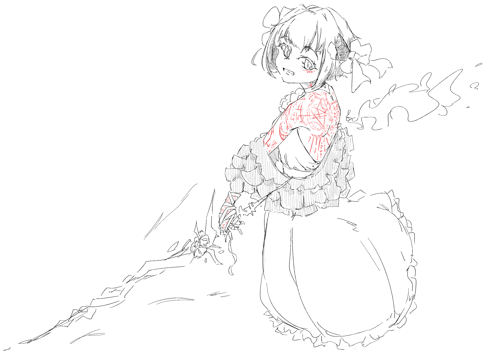

Name: Majo (Witch)
Medium: Clip Studio Paint
Dimension: 3508x2480
魔女 (Romaji: majo, English: Witch) is a piece was created during winter break. The pieces
was heavily influenced by Japanese animation style of drawing (as most of my digital illustrations are inspired
by Anime). It started as anatomy practice, developed into a charater protrait, and subsquently a part of a world-building
project. The goal of this pieces is to personificate madness and heresy. Of course, also trying to draw something cute.